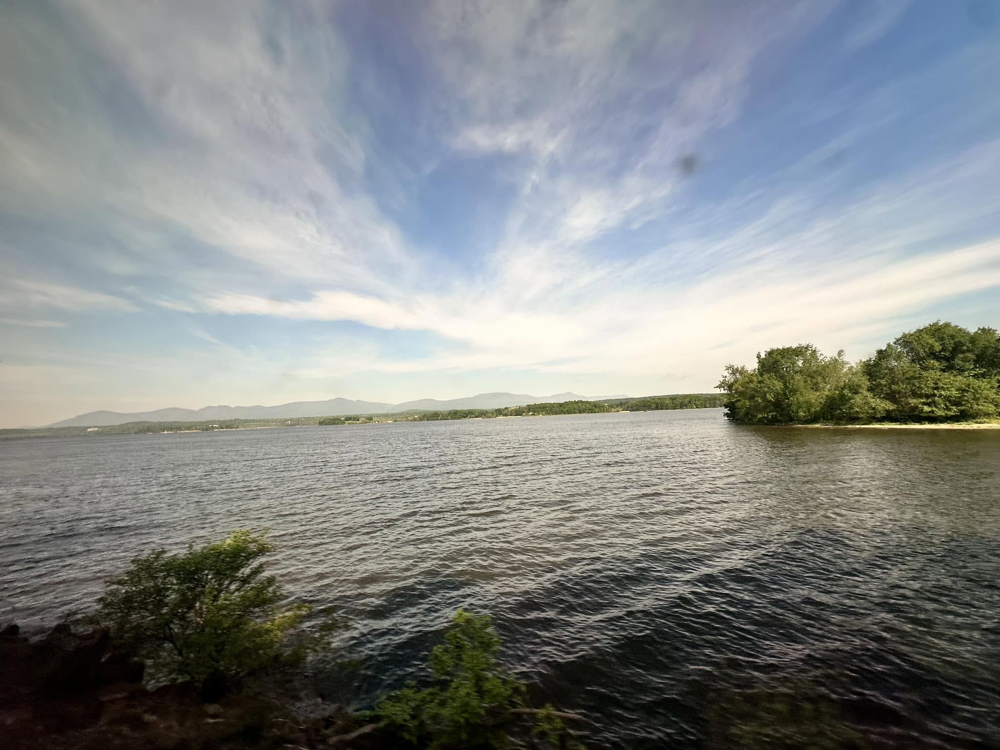
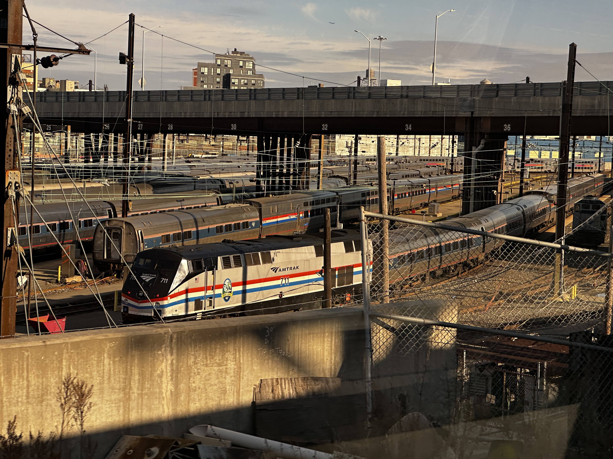
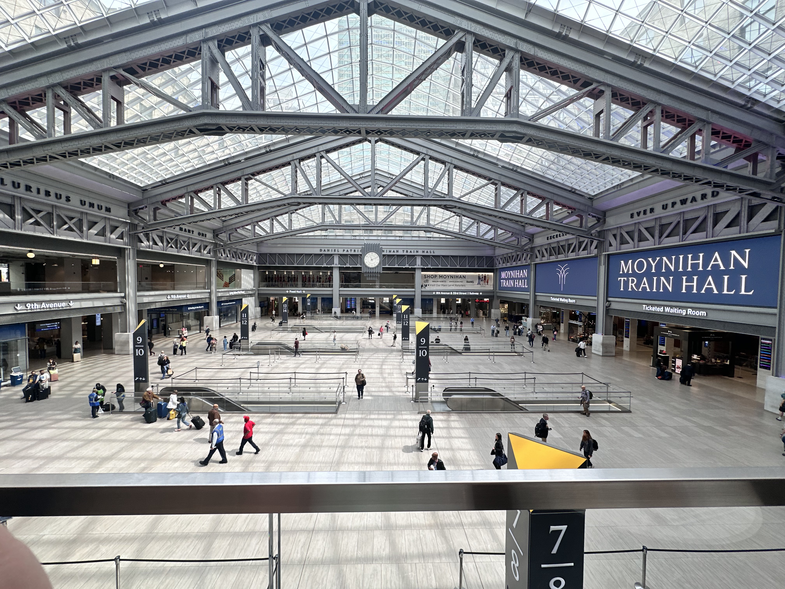
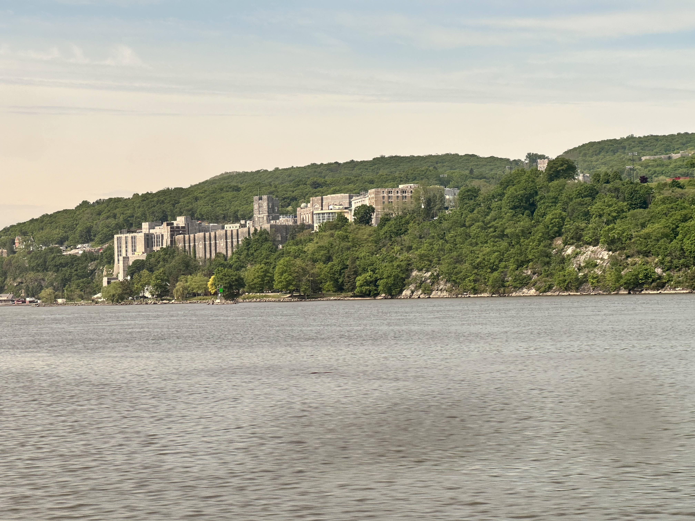
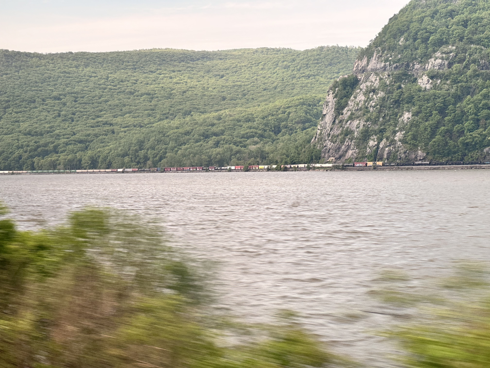

Amtrak: The Hudson Line
Today's trip report: Amtrak's Empire Service to NYC for the week, and my first mediocre Amtrak review.

Today I'm riding the Amtrak Empire Service from Albany to NYC. This is henceforth referred to as the "short" empire line while I complain about coffee. The "long" empire line goes all the way to Niagara Falls and passes through Rochester - I usually ride the 'long' empire line.
I got up at 4:00 today in order to drive to Albany and make this train. I didn't factor in extra time for getting coffee and breakfast at the station, as the "long" empire trains all have a cafe car, which is open and stocked. I'm used to rolling up to the Rochester (or New Haven) station at 5:30 AM, and grabbing a breakfast sandwich and coffee as soon as I get on the train.

After boarding and hearing the announcement that there will be no cafe car, I asked our lovely conductor about the missing coffee. He informed me that "short" empire trains don't have cafe cars, and that I would have needed to get breakfast ahead of time. I understand why the 'short' empire trains don't need a cafe, but those of us used to having the cafe really miss it.
I just realized I've written three (now four) paragraphs lamenting the lack of coffee. I think I might be a little reliant on it when it's this early in the morning. I'll use a lounge pass when I get to NYP to drink the coffee and have some breakfast in the Amtrak station before I head out for the day.

Other than the severe and significant lack of coffee, this trip is pretty nice. The views on the right side of the Hudson River and valley are gorgeous. The train runs /right/ next to the river, and runs fast - between 90mph and 110mph for a majority of the ride.

Travel time is 2 hours and 25 minutes. Driving between Albany and NYC takes approximately the same amount of time. Right now, my phone says 2 hours and 45 minutes due to thruway traffic. According to the NY Thruway Toll Calculator, with an out of state EZ-Pass, it costs $22.77 to drive between Albany and the NYC line. Then, once you get to the city, you have to pay for parking (or get very lucky). A single day in a garage costs a similar amount to what I paid for the fare - $27.

All in all, this is an incredibly compelling value proposition, both for your money and your time - if you can get past the lack of coffee. Normally, I think I could. Today - not so much.
Final Bird Count:
- 2 Great Blue Herons
- 1 Bald Eagle (in a nest, probably with eaglets)
- 1 Osprey
- 1 Juvenile red-tailed hawk
- 5 Canada Geese
- More seagulls and cormorants than I can count.